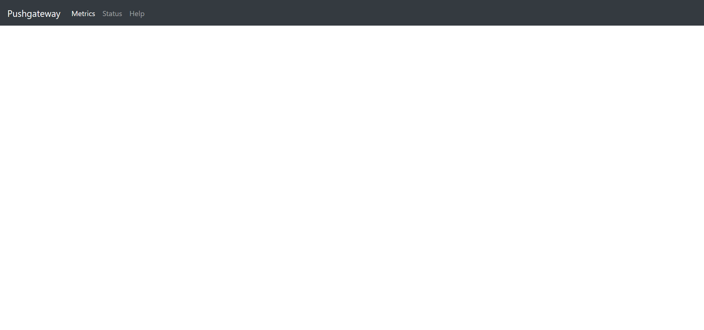
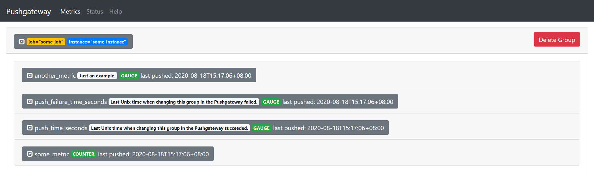
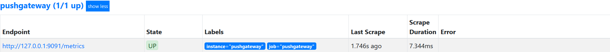
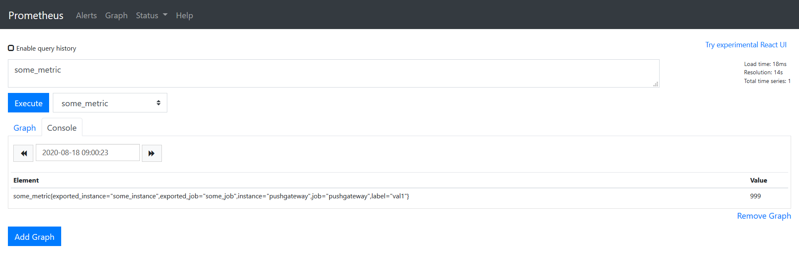

Prometheus在設計上是採用pull的模式，但在網路架構的規劃上，並不是所有的target能讓Prometheus去pull，這時候就是Pushgateway出馬的時候了
Pushgateway顧名思義，能讓所需要監控的設備及服務用push的方式將metrics放在Pushgateway，再讓Prometheus來pull
如下圖所示：
接下來就試著做一遍了
直接在github上就能下載到，檔案不大十分快速，解開來一樣是binary file
$ wget https://github.com/prometheus/pushgateway/releases/download/v1.2.0/pushgateway-1.2.0.linux-amd64.tar.gz
$ tar zxvf pushgateway-1.2.0.linux-amd64.tar.gz
$ cd pushgateway-1.2.0.linux-amd64.tar.gz
執行和exporter差不多，一樣用–web.listen-address來決定listen address及port，–persistence.file pg_file能指定一個暫存用的檔案，以防重新啟動時丟失當前的metrics
$ ./pushgateway --web.listen-address 0.0.0.0:9091 --persistence.file pg_file
level=info ts=2020-08-18T07:04:00.332Z caller=main.go:83 msg="starting pushgateway" version="(version=1.2.0, branch=HEAD, revision=b7e0167e9574f4f88404dde9653ee1d3c940f2eb)"
level=info ts=2020-08-18T07:04:00.332Z caller=main.go:84 build_context="(go=go1.13.8, user=root@0e823ccfff84, date=20200311-18:51:01"
level=info ts=2020-08-18T07:04:00.334Z caller=main.go:137 listen_address=0.0.0.0:9091
接下來就能簡單pull測試一下metrics了
$ curl 0.0.0.0:9091/metrics
...
# HELP pushgateway_build_info A metric with a constant '1' value labeled by version, revision, branch, and goversion from which pushgateway was built.
# TYPE pushgateway_build_info gauge
pushgateway_build_info{branch="HEAD",goversion="go1.13.8",revision="b7e0167e9574f4f88404dde9653ee1d3c940f2eb",version="1.2.0"} 1
# HELP pushgateway_http_requests_total Total HTTP requests processed by the Pushgateway, excluding scrapes.
# TYPE pushgateway_http_requests_total counter
pushgateway_http_requests_total{code="200",handler="status",method="get"} 1
也能用從web查看，因為現在沒東西push，所以是空空如也

現在來嘗試push metrics
$ cat <<EOF | curl --data-binary @- http://127.0.0.1:9091/metrics/job/some_job/instance/some_instance
# TYPE some_metric counter
some_metric{label="val1"} 42
# TYPE another_metric gauge
# HELP another_metric Just an example.
another_metric 2398.283
EOF
嫌指令長也能使用@file name的方式POST檔案
$ curl --data-binary @teest.prom http://127.0.0.1:9091/metrics/job/some_job/instance/some_
instance
當然除了POST，也能使用DELETE刪除指定的instance
$ curl -X DELETE http://127.0.0.1:9091/metrics/job/some_job/instance/some_instance
也可以用PUT來覆蓋
curl -X PUT --data-binary @teest.prom http://127.0.0.1:9091/metrics/job/some_job/instance/some_instance
Web也能看到剛才push的metrics

雖然能用file-based sd，但這次就偷懶一下用static config了，畢竟只是想演示一遍
只要在prometheus.yml的target指定Pushgateway
|
|
接下來就能看到endpoint多了Pushgateway

也可以query了

完